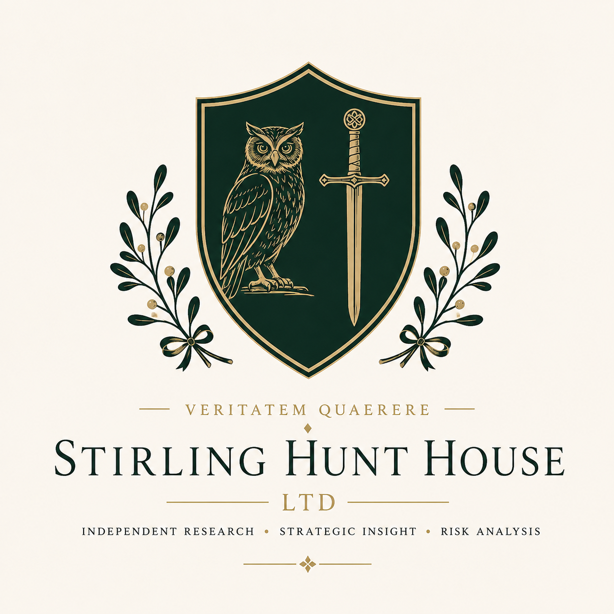

Independent Research • Intelligence • Risk Analysis
Enter the InstituteDiscover Our Research
↓Stirling Hunt House Ltd is an independent research institute committed to rigorous analysis, strategic foresight and evidence-based thinking. We bring together scholarship, intelligence and disciplined inquiry to illuminate complex problems and develop practical insight.
Assessment of geopolitical, economic, organisational and emerging risks.
Long-term forecasting, competitive analysis and strategic planning.
Evidence-driven publications, white papers and policy studies.
"Truth is discovered through disciplined inquiry."
Our research papers, essays and strategic reports will be published here.
Stirlinghunt_william@proton.me